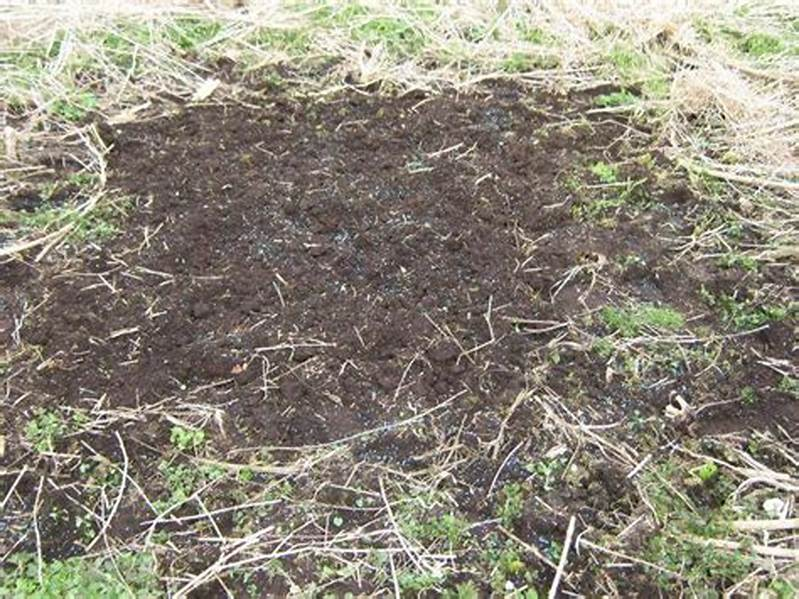
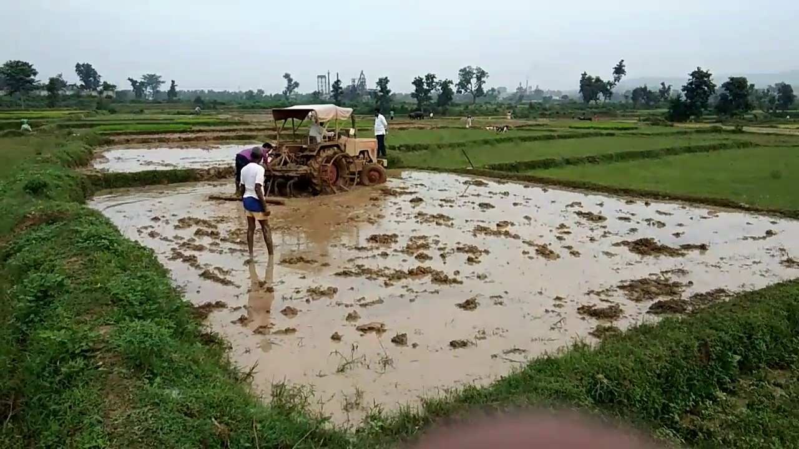
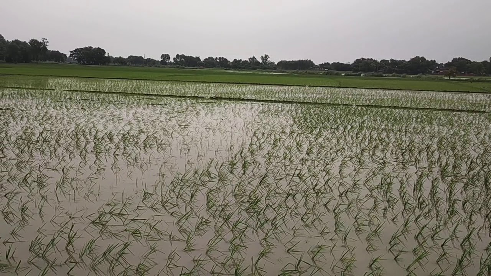
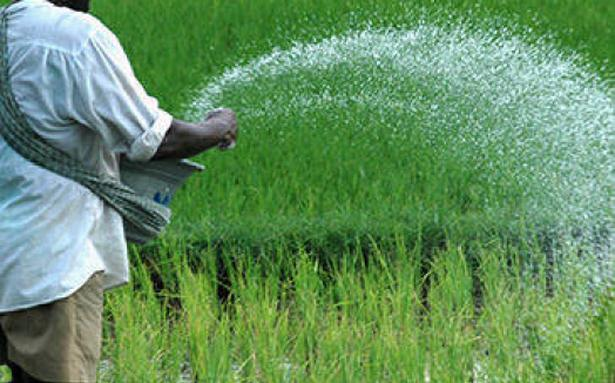
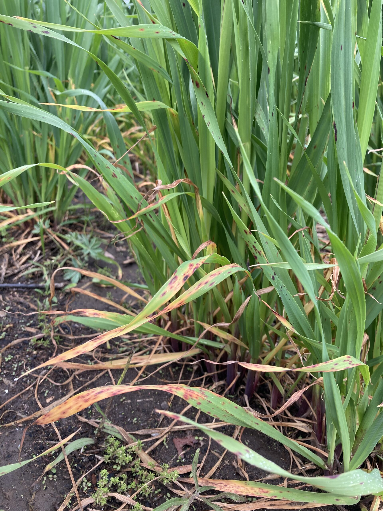

धान की खेती और रोग रोकथाम
धान के लिए खेत की तैयारी





# उचित जल निकासी वाली दोमट मिटटी उपयुक्त होती है | भारी व नदी झील के किनारे की मिटटी में dhan ki kheti से किसान भाई पैदावार प्राप्त कर रहे हैं |
# गर्मी में समय मिलने पर खेत की एक बार अच्छी तरह से जुताई करले तथा गोबर अथवा कम्पोस्ट खाद 20 से 25 गाड़ी प्रति हैक्टेयर खेतो में डाल लें ।
इससे खेतो की उर्वरा शक्ति बरक़रार रहती है |
# अगर खेतों में सन की हरी खाद की फसल लगाई गई हो तो उन खेतों में रोपा लगाने के 15 दिन पहले सन की फसल को जुताई
( 6 inch. की गहराई तक) कर ले और इसे मिट्टी में सड़ने के लिये छोड़ दें, क्योंकि हरी खाद द्वारा स्थाई रूप से मिट्टी की उर्वराशक्ति को बढ़ा सकते है।
# रोपा लगाने से पहले खेत की अच्छी तरह से मचाई कर लें, पाटा चलाने के पहले P.S.B कल्चर 500 gm मात्रा को 100 Kg
गोबर की भुरभुरी खाद में अच्छी तरह मिलाकर प्रति हैक्टेयर के हिसाब से छिड़काव करें तथा नत्रजन की आधी मात्रा, स्फुर एवं पोटाश की पूरी मात्रा छिड़क कर मिट्टी में मिला दें।
# धान की रोपाई के लिए पौध उखाड़ने से 1 दिन पहले नर्सरी के खेत में पानी चला दे ताकि जमीं पर नमी बनी रहे और पौध उखाड़ते
समय ध्यान दे की पौधों कि जड़ों को धोते समय नुकसान न होने दे तथा पौधों को काफी निचे से पकड़कर उखाड़े |
# धान की रोपाई में पौधे की उम्र सामान्यत : 25 – 30 दिन पुराना हो तथा पौधे में 5 – 6 पत्तियां निकल जाए तो यह रोपाई के सही होता है,
और यदि पौधे की उम्र ज्यादा होगी तो पौधे में कल्ले कम फूटते है जिससे उपज में कमी आती है|
# रोपाई करने से पहले खेत को अच्छी तरह से समतल कर के मेंड़ बना ले,
# धान की फसल को खाद्यान फसल में सबसे अधिक पानी की आवस्य्क्ता होती है, धन को रोपाई के एक सप्ताह बाद कल्ले बनते समय, बाल निकलते समय,
फूल बनते समय, और दाना बनते समय खेतो में पानी अति आवश्यक है|
# परिक्षण के आधार पर यह पाया गया है की धन की फसल अच्छी उपज लेने के लिए लगातार पानी भरा रहना आवश्यक नहीं है,
बल्कि इसके लिए खेतो में से सतह पर से एक बार पानी निकल लेना चाहिए, और
इसके 2 दिनों बाद उसमे 5 से 7 सेंटीमीटर पानी वापस से भर देना चाहिए |
# यदि वर्षा की कमी के कारण फसलों में पानी की कमी दिखाई दे, तो सिचाई अवश्य करे |
खेत में पानी रहने से फास्फोरस, मैगनीज , और लोहा तत्वों की उपलब्धता बड़ जाती है, साथ ही हमरे खेत में जो विभिन्न प्रकार के खरपतवार होते है
वो भी अधिक पानी की अवस्था में नहीं उग पाते है |
धान की बीमारियाँ एवम् उनको रोकने के उपाए
खैरा रोग

# यह मिट्टीमेंजस्ते की कमी के कारण होने वाला एक रोग है.
# इस रोग से प्रभावित फसल की निचली पत्तियां पीली पड़ने से यह रोग प्रारंभ होता है जो बाद में पत्तियों पर कत्थई रंग के छिटकवा धब्बे उभरने लगते है |
# इस रोग के कारण कल्ले कम निकलते है तथा पौधे की वृधि रुक जाती है |
खैरा रोग की रोकथाम
# इसकी रोकथाम के लिए 25kg जिंक सल्फेट प्रति हेक्टेयर की दर से रोपाई या बओई से पहले खेत तैयार करते समय डालना चाहिए |
# रोग लगने के बाद इसकी रोकथाम के लिए 5 kg. जिंक सल्फेट तथा 2.5 kg. चुना 600-700 लीटरपानी में घोलकर प्रति हेक्टेयर छिडकावकरना चाहिए |
# रोपाई के समय 2% जिंक सल्फेट के घोल में पौधों की जड़ो को 1-2 मिनट डुबोकर रोपाई करने पर भी लाभ होता है |
धान में खरपतवार नियंत्रण
जैविक विधि और रसायन
# रोपाई ,
# घरड़ा कंपनी की BLAID दवा (धान लगाने के समय )
# NACL कंपनी की ERAZE दवा
# BAYER कंपनी की topstar दवा
# SINOCAM कंपनी की machete दवा(धान लगाने के समय )
# NAMNIGOLD दवा (धन लगाने के 20-25 दिन के बाद )
धान में लगने वाले प्रमुख कीट और कीट नियंत्रक रसायन
दीमक
यह एक सामाजिक कीट है तथा कालोनी बनाकर रहते हैं। यह कालोनी में लगभग 90 प्रतिशत श्रमिक,
2-3 प्रतिशत सैनिक, एक रानी व एक राजा होते हैं। श्रमिक पीलापन लिये हुए सफेद रंग के पंखहीन होते है जो उग रहे बीज, पौधों की जड़ों को खाकर क्षति पहुँचाते हैं।
रसायन
फिप्रोनिल(धन लगाने के बाद )
,बीफेनथिरिन (स्प्रे),क्लोरोपायरीफास (स्प्रे )
गन्धी
इस कीट के शिशु एवं प्रौढ़ लम्बी टांगो वाले भूरे रंग के विशेष गन्ध वाले होते हैं, जो बालियों की दुग्धावस्था में दानों में बन रहे दूध को चूसकर क्षति पहूँचाते हैं।
प्रभावित दानों में चावल नहीं बनते हैं।
रसायन ,CYPER-25(स्प्रे ),Karate(स्प्रे ),HAMLA-550(स्प्रे )